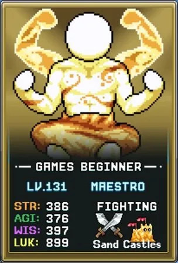
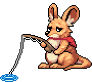
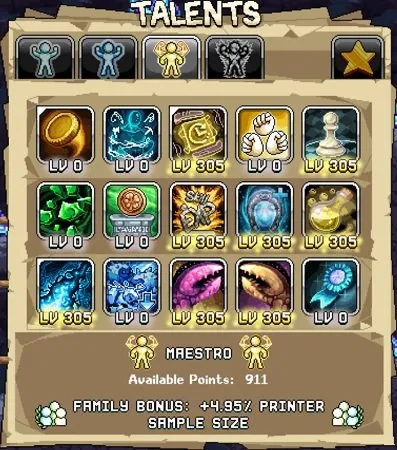
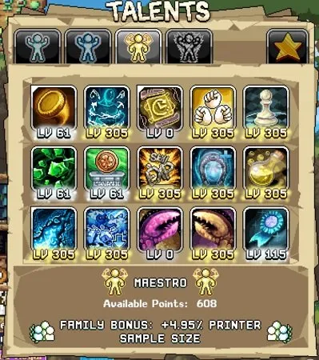
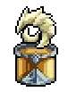

Maestro 얻는 방법 (비밀 서브클래스)
Maestro 해금 요건은 까다로우며, Idleon Secrets Wiki 페이지에 상세히 설명되어 있습니다. 퀘스트 자체는 World 2에서 열리지만, 완료하려면 World 3까지 진행한 후에야 가능한 경우가 대부분입니다.
Idleon Maestro 퀘스트의 요약은 다음과 같습니다.
- World 1과 World 2 스킬에서 높은 Journeyman 레벨 달성
- 마지막 W2 Snelbie 맵(Djonnuttown) 해금
- Biggie Hours 미니보스를 HP 1로 처치. 이 전투에서 594 방어를 갖추면 데미지를 전혀 받지 않아 훨씬 쉽게 클리어할 수 있습니다.
대부분의 플레이어는 스킬 레벨과 방어 요건을 가장 어려운 난관으로 꼽습니다. Maestro 해금을 돕는 권장 팁은 다음과 같습니다.
스킬 경험치
채굴(32), 벌목(33), 제련(35), 낚시(23), 연금술(25), 채집(25) 레벨에 필요한 Journeyman 스킬 경험치를 높이려면 다음 부스트를 활용하십시오.
| 스킬 경험치 원천 | 설명 |
|---|---|
| Journeyman 탤런트 – Happy Dude | Maestro에 필요한 모든 스킬에 적용되는 핵심 스킬링 경험치 원천입니다. |
| Black Pearls | Killroy Skull Shop에서 구매할 수 있으며, 각 구슬은 스킬 레벨 30까지 레벨업의 20%를 제공합니다. 비율 기반이므로 더 높은 레벨에서 사용할수록 효율이 좋습니다. |
| EXP Balloons & Time Candy | 게임 이벤트, 퀘스트, Killroy에서 얻을 수 있으며, 비축해 둔 것이 있다면 Maestro 클래스 획득에 사용할 만합니다. |
| 스킬링 음식(Skilling Foods) | 채굴, 벌목, 낚시, 채집에 스킬링 음식을 사용하면 시간당 경험치가 크게 향상됩니다. 음식을 아끼려면 AFK(방치) 세션당 음식 1개만 장착해도 여러 개를 장착한 것과 같은 결과를 얻습니다. |
| Orion the Great Horned Owl's Feather Enterprise | World 1의 Grand Owl Perch 맵에 위치한 방치형 올빼미 게임으로, 모든 캐릭터의 다양한 스킬 경험치 진행을 돕습니다. |
| Prayers | World 3의 Goblin Gorefest 타워 디펜스 미니게임 51웨이브를 클리어했다면 Unending Energy 기도가 스킬 경험치에 큰 부스트를 주지만, AFK 시간이 최대 10시간으로 제한됩니다. |
방어
활을 사용하여 안전하게 Maestro 해금에 필요한 Biggie Hours 1HP 전투를 완료할 수 있지만, 시간이 오래 걸리고 실수 한 번에 처음부터 다시 해야 합니다. 대신 방어를 594까지 올리면 이 미니보스에 닿아도 데미지를 전혀 받지 않아 퀘스트를 쉽게 완료할 수 있습니다. 이 단계에서의 최적 방어 원천은 다음과 같습니다.


| 방어 원천 | 설명 |
|---|---|
| Poppy the Kangaroo Mouse's Fish Pond | World 2의 방치형 게임으로, World 2 상인에게서 비밀 지도(Secret Map)를 구매하면 해금됩니다. 방어의 주요 원천이며 AFK 수익과 낚시 부스트에도 도움을 줍니다. |
| The Upgrade Vault | Upgrade Vault의 여섯 번째 업그레이드를 구매하면 방어 100을 추가하며, Vault Mastery 탤런트로 최대 150까지 올릴 수 있습니다. |
| 장비(Equipment) | 최대한 높은 방어를 제공하는 방어구를 착용하고, World 3 상점에서 구매한 업그레이드 돌(Upgrade Stones)로 강화하십시오. |
| 탤런트(Talents) | Beginner 탤런트 탭의 Bucklered Up 탤런트가 방어를 제공합니다. |
| 카드(Cards) | Oak Tree, Forest Soul, Sheepie 카드들은 모두 방어 보너스를 제공합니다. |
| 황금 음식(Golden Food) | 보유 중인 Golden Meat Pies를 장착하십시오. |
| 연금술(Alchemy) | Power Cauldron의 9번 버블인 FMJ를 Fruit Flies로 레벨업하면 방어에 고정 및 % 수치로 기여합니다. |
| 우표(Stamps) | Shield(W1 상점) 우표와 Buckler Stamp(W3 Snouts 퀘스트)가 방어를 추가합니다. |
| Star Signs | Fatty Doodoo와 Ned Kelly는 방어를 제공하며 주요 별자리 진행 경로상에 있어 자연스럽게 해금됩니다. |
| Obols | Gigafrogs에서 드롭되는 Pop Obols는 소폭의 방어를 주며 드롭률 측면에서도 중요한 오볼입니다. 보유 중이라면 Amarok Obols도 사용할 수 있습니다. |

Maestro 빌드 – 스킬링(Skilling)
스킬링은 Maestro의 핵심 역할입니다. Maestro의 왼손·오른손 탤런트를 통해 다른 캐릭터의 효율과 경험치를 높이려면 W1~W3 스킬 레벨을 다른 캐릭터보다 앞서 유지해야 합니다. 순수 스킬링 빌드의 우선순위는 다음과 같습니다.
| 탤런트 | 효과 | 설명 |
|---|---|---|
| Bliss N Chips | Happy Dude와 Lucky Horseshoe의 최대 레벨 증가 | Happy Dude는 감소 효과 없이 레벨당 1%의 스킬 경험치를 제공하므로, 최대 레벨을 높이는 것이 매우 중요합니다. |
| Skilliest Statue | EhExPee, Kapow, Feasty 조각상 보너스 증가 | EhExPee와 Feasty 조각상은 스킬링에 유용한 혜택을 제공합니다. |
| Maestro Transfusion | 스킬 경험치 % 증가 / 스킬 효율 % 감소 | 자원 노드에서 100% 이상의 확률을 보유할 때 유용합니다. 100% 미만에서는 추가 경험치를 얻을 수 없기 때문입니다. 새로운 Maestro는 자주 사용하지 않겠지만, 결국 경험치 극대화에 필수적이 되므로 계정 상황에 맞게 천천히 레벨을 올리십시오. |
| Printer Go Brrr | W3 3D Printer 샘플을 수 시간치 즉시 출력 | 전투 프리셋보다 포인트가 더 많은 스킬링 프리셋에 배치하는 것을 권장합니다. 매일 활성화하면 연금술, 우표 등 다른 Idleon 진행 메커니즘에 투자할 자원을 크게 늘릴 수 있습니다. |
| One Step Ahead | Voidwalker 탤런트 포인트 증가 | 다음 직업 승급 탭(Voidwalker)에 사용할 보이드 탤런트 포인트를 제공합니다. 승급 전에는 효과가 없으므로 건너뛰어도 됩니다. |
| Right Hand of Action | 스킬 레벨이 Maestro보다 낮은 다른 캐릭터의 스킬 효율 % 증가 | Maestro가 더 높은 스킬 레벨을 유지할 때의 핵심 혜택입니다. 만레벨로 올려 스킬링하는 다른 캐릭터들을 강화하고, 스킬링 프리셋에 유지하는 것을 권장합니다. |
| Left Hand of Learning | 스킬 레벨이 Maestro보다 낮은 다른 캐릭터의 스킬 경험치 % 증가 | 위와 유사하지만 다른 캐릭터에게 스킬 경험치가 필요할 때의 틈새 용도입니다. 단, 해당 스킬에서 Maestro보다 앞서 레벨업하지 않도록 주의하십시오. |
| Jman Was Better | Journeyman 탤런트 포인트 증가 | 여유 포인트가 있고 Journeyman 탤런트에 더 많은 포인트가 필요한 경우에 유용합니다. |

Maestro 빌드 – 전투(Active & AFK)
스킬 마스터임에도 불구하고 Maestro는 Active(직접 플레이) 또는 AFK(방치) 상태에서도 전투 역할을 합니다. Crystal Countdown을 통해 Crystal Monster(크리스탈 몬스터) 처치 시 랜덤 스킬의 필요 경험치를 낮춰주므로, Idleon을 열어 두고 Auto 기능을 사용하는 Active 전투가 Maestro 스킬 레벨에 매우 중요합니다.
전통적인 AFK 전투도 효과적이어서 Woodular Circles, Nuget Cakes와 같은 희귀 드롭을 사냥하거나 몬스터 카드를 파밍할 수 있습니다. 두 역할을 하나의 전투 탤런트 preset(프리셋)으로 합쳐 다음 우선순위를 적용하십시오.
| 탤런트 | 효과 | 설명 |
|---|---|---|
| Crystal Countdown | 크리스탈 또는 거대 몬스터 처치 시 랜덤 스킬의 필요 경험치 감소 | Active 플레이에서 Maestro의 스킬 레벨을 앞서 유지하는 데 도움을 주는 핵심 스킬로, Active 플레이를 전혀 하지 않는 경우가 아니라면 최우선으로 투자하십시오. |
| Skillage Damage | W1~W3 스킬 중 가장 낮은 레벨 스킬 5레벨마다 % 데미지 증가 | Maestro의 주요 데미지 부스트로, 가장 낮은 레벨 스킬을 기준으로 합니다. 모든 스킬을 균등하게 레벨업하여 이 탤런트를 극대화하십시오. |
| Colloquial Containers | 연금술 Lotto Skills 버블 레벨에 따라 Sleepin On The Job의 최대 레벨 증가 | 이 탤런트의 효과는 Lotto Skills 연금술 버블 레벨로 제한되므로, 해당 버블 레벨과 동일하게 유지하고 절대 초과하지 마십시오. 이를 통해 AFK 수익을 높이는 Journeyman 탤런트에 더 많은 포인트를 투자할 수 있습니다. |
| Triple Jab | 주먹이 3번 타격하며 추가 데미지 적용 | 처음에는 1포인트를 권장합니다. 세 번째 근접 타격으로 Active 데미지가 크게 향상됩니다. Crystal Monster를 1타로 처치하는 속도를 목표로 필요에 따라 추가 레벨을 올리십시오. |
| One Step Ahead | Voidwalker 탤런트 포인트 증가 | 스킬링 프리셋과 마찬가지로 전투 프리셋에서도 Voidwalker 포인트가 필요합니다. |
| Skilliest Statue | EhExPee, Kapow, Feasty 조각상 보너스 증가 | 전투 프리셋에서는 Kapow(치명타 데미지) 및 Feasty(음식 효과) 조각상 부스트로 데미지를 소폭 향상시키는 낮은 우선순위 탤런트입니다. |
| Bliss N Chips | Happy Dude와 Lucky Horseshoe의 최대 레벨 증가 | 여유 포인트에만 투자하여 Lucky Horseshoe의 레벨을 올려 Maestro의 명중률과 데미지에 주로 기여하는 추가 LUK을 얻을 수 있습니다. |
| Coin Toss | 보유 골드 양에 따라 데미지를 주는 동전을 던짐 | 낮은 우선순위이며 Active 사용이 필요하지만, 보스를 Active 파밍할 때 추가 데미지에 유용할 수 있습니다. |
Maestro 크리스탈 파밍 팁
Maestro의 크리스탈 파밍은 클래스의 강점 중 하나로, 게임 내에서 크리스탈 관련 탤런트를 가진 유일한 캐릭터입니다. 또한 Crystal Countdown 메커니즘의 핵심이며, 조각상, Obols, 우체국 펜 등 Crystal Monster 드롭 파밍에도 활용됩니다. Crystal Monster는 Active 플레이 시에만 소환됩니다(기본 확률 1/2000). 기본 체력은 해당 맵 몬스터의 15배, 경험치는 35배입니다. 크리스탈 몬스터 소환 확률을 높이려면 다음을 활용하십시오.

크리스탈 확률 원천
- Cmon Out Crystals (Journeyman 탤런트)
- Crystals 4 Dayys (Star Talent)
- Non Predatory Loot Box (Post Office)
- Crystallin (Stamp)
- Poop(W1) & Demon Genie(W4) (Cards)
- Crescent Shrine
이 원천들을 크리스탈 몬스터 처치 시 추가 크리스탈 소환 확률을 부여하는 World 4 연구소 칩(Chocolately Chip)과 조합하면 크리스탈 파밍 수익이 크게 향상됩니다. 인기 있는 크리스탈 파밍 맵으로는 적이 많고 지형이 단순한 Bored Bean(W1), Sandy Pot(W2), Bloodbone(W3), Clammie(W4) 등이 있습니다.